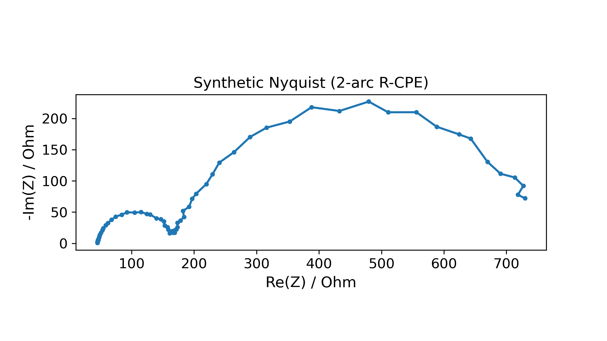
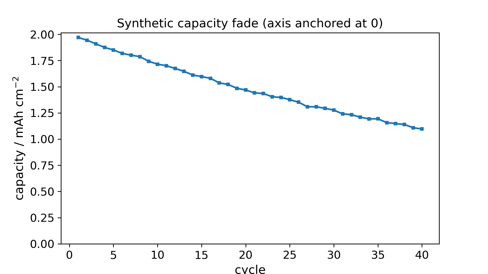

A small, dependency-light Python package of analysis primitives for operando electrochemical impedance spectroscopy and censored reliability of battery cells: read raw instrument exports, fit equivalent circuits and the distribution of relaxation times, run right-censored lifetime statistics, and monitor process stability. It ships no dataset-specific defaults — electrode area, rated capacity, and frequency windows are always explicit parameters — and no laboratory data: every example and test runs on seeded synthetic generators.
SYNTHETIC The two figures on this page are produced by the package's own seeded synthetic generators, not from any measured cell. They exist to show the analysis running end-to-end — the package contains methods and synthetic data only.
A single example script (end_to_end_synthetic.py) exercises the whole pipeline
on generated data — no real data, no network — so the toolkit can be evaluated in one command.
An AICc criterion picks a 2-arc R-CPE fit and reads the model-free valley resistance for IR correction.
Tikhonov-regularized deconvolution recovers both relaxation-time peaks from the same sweep.
Right-censored Weibull B10/B50 with a profile-likelihood interval.
A Nelson-rule scan on a control chart, and a fade-model fit with a cycles-to-80% projection.


The figure style itself is enforced in code — 12 pt ticks, uniform line width, zero-anchored quantity axes, and exact-pixel export — the same spec used across every project in this portfolio.
Each module owns a single analysis concern, with the domain quirks handled explicitly rather than hidden behind defaults.
| Module | Purpose |
|---|---|
io.biologic | Read BioLogic-style tab-separated exports; pin the correct potential column, coulomb-count capacity when the instrument's charge column is unreliable, and parse the filename metadata tail. |
eis.segmentation | Split a point stream into frequency sweeps by detecting frequency resets — no hard-coded instrument frequencies; flags truncated sweeps. |
eis.circuit | Complex non-linear least-squares fit of Rs + (R‖CPE)[+(R‖CPE)], AICc 1-vs-2-arc selection, per-parameter uncertainties, and a model-free valley-resistance proxy. |
eis.drt | Tikhonov-regularized DRT (NNLS, L-curve λ), with peak and region resistances. |
reliability.censored | Right-censored MLE for Weibull / lognormal / loglogistic / normal / exponential; B-lives with profile-likelihood CIs; Kaplan–Meier; Johnson median ranks; an AICc table; optional cross-check against lifelines / reliability. |
spc.charts | Phase-I I-MR and EWMA control charts with Nelson rules 1–4, returned as tidy violation records. |
fade | Per-cycle capacity / coulombic-efficiency rollup; linear / exponential / √n fade fit by AICc; cycles-to-fraction projection. |
figstyle | One importable figure spec: 12 pt ticks, uniform line width, zero-anchored quantity axes, exact-pixel export. |
synthetic | Deterministic, seeded generators behind every example and test. |
The package is built to run unattended and fail loudly rather than quietly wrong.
Ambiguous input raises a typed, actionable error (CircuitFitError, InsufficientCyclesError, …) rather than returning NaN.
No default electrode area or rated capacity anywhere; frequency windows are parameters, not constants.
Every stochastic path takes a required seed or generator — the same run always yields the same numbers.
The custom censored MLE is independently validated against lifelines and reliability when those packages are present.
pytest tests/ -q # 76 tests, synthetic data only, no network, no real dataThe suite covers filename / column parsing, coulomb counting, sweep segmentation, circuit and DRT parameter recovery, censored-MLE recovery and CIs against hand-computed values, Nelson rules and EWMA recursion, and fade-model selection.